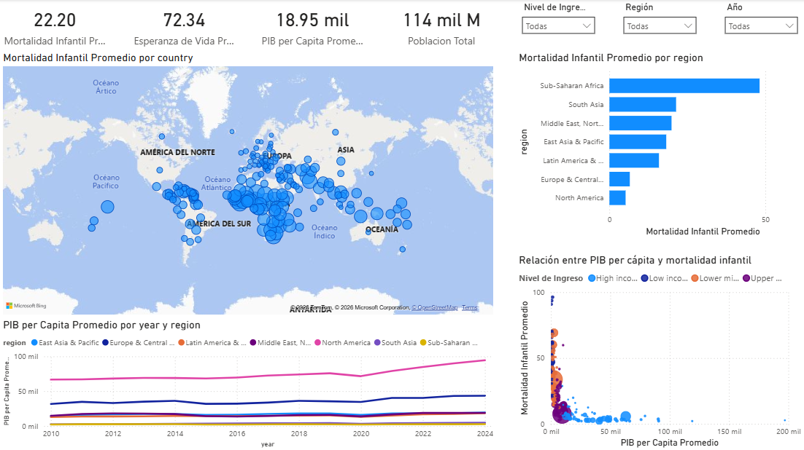

Python pipeline · World Bank API · Power BI
Indicadores globales de salud y desarrollo
Proyecto de analitica construido con datos publicos de World Bank. El trabajo incluye extraccion por API, guardado de datos crudos, transformacion con Python, generacion de CSV limpios y modelado en Power BI para analizar mortalidad infantil, esperanza de vida, poblacion, PIB per capita y acceso a servicios.
Vista general
Objetivo del proyecto
El objetivo fue construir un flujo completo de datos, desde una fuente publica hasta un dashboard analitico. El reporte permite explorar como se relacionan el nivel de ingreso, el PIB per capita, el gasto en salud, el acceso a electricidad y la esperanza de vida con la mortalidad infantil por pais y region.
Pipeline
Trabajo realizado con Python
El pipeline se desarrollo en Python usando librerias estandar. El script consulta la API de World Bank, maneja paginacion, guarda los JSON originales y genera archivos procesados para Power BI.
- Extraccion: descarga catalogo de paises e indicadores desde World Bank API.
- Persistencia raw: guarda respuestas JSON en `data_raw` para trazabilidad.
- Limpieza: elimina agregados regionales, conserva paises validos y cruza por codigo ISO3.
- Transformacion: convierte los indicadores a una tabla pais-anio.
- Modelado: genera `DimCountry`, `DimYear` y `FactCountryIndicators`.
- Localizacion: crea una version es-MX con `;` como delimitador y `,` decimal para Power BI.
- Calidad: genera un reporte de valores faltantes por indicador.
Capturas
Paginas del reporte

Fuente
Indicadores usados
Los datos provienen de World Development Indicators de World Bank. Se eligieron indicadores que permiten comparar salud, desarrollo economico y acceso a servicios basicos.
- SP.DYN.IMRT.IN: mortalidad infantil por cada 1,000 nacidos vivos.
- SP.POP.TOTL: poblacion total.
- SP.DYN.LE00.IN: esperanza de vida al nacer.
- NY.GDP.PCAP.CD: PIB per capita en USD.
- SH.XPD.CHEX.PC.CD: gasto en salud per capita en USD.
- EG.ELC.ACCS.ZS: acceso a electricidad como porcentaje de poblacion.
Modelo
Tablas y relaciones
Para Power BI se uso un modelo estrella sencillo, suficiente para analizar indicadores por pais, region, nivel de ingreso y anio.
- DimCountry: pais, codigo ISO3, region, nivel de ingreso, capital, latitud y longitud.
- DimYear: anios disponibles de 2010 a 2024.
- FactCountryIndicators: indicadores numericos a grano pais-anio.
Python
Fragmentos clave del pipeline
def fetch_json(endpoint, params=None, retries=3):
query = urlencode(params or {})
url = f"{API_BASE_URL}/{endpoint}"
if query:
url = f"{url}?{query}"
with urlopen(url, timeout=45) as response:
return json.loads(response.read().decode("utf-8"))def fetch_paginated(endpoint, params=None):
first_page = fetch_json(endpoint, {**(params or {}), "page": 1})
metadata = first_page[0]
rows = first_page[1] or []
for page in range(2, metadata.get("pages", 1) + 1):
payload = fetch_json(endpoint, {**(params or {}), "page": page})
rows.extend(payload[1] or [])
return rowsINDICATORS = {
"SP.DYN.IMRT.IN": "infant_mortality_per_1000",
"SP.POP.TOTL": "population",
"SP.DYN.LE00.IN": "life_expectancy",
"NY.GDP.PCAP.CD": "gdp_per_capita_usd"
}DimCountry[country_code] 1:* FactCountryIndicators[country_code]
DimYear[year] 1:* FactCountryIndicators[year]DAX
Medidas principales
Mortalidad Infantil Promedio =
AVERAGE ( FactCountryIndicators[infant_mortality_per_1000] )Esperanza de Vida Promedio =
AVERAGE ( FactCountryIndicators[life_expectancy] )PIB per Capita Promedio =
AVERAGE ( FactCountryIndicators[gdp_per_capita_usd] )Poblacion Total =
SUM ( FactCountryIndicators[population] )Aprendizajes
Decisiones tecnicas
- Separar datos crudos y procesados permite auditar el origen de los resultados.
- El cruce correcto con World Bank requiere usar `countryiso3code`, no el codigo ISO2 del objeto `country`.
- La version es-MX de los CSV evita errores de interpretacion decimal en Power BI.
- El modelo estrella reduce ambiguedad y facilita medidas reutilizables.
- El scatter de PIB per capita vs mortalidad infantil ayuda a visualizar desigualdad entre paises.
Estado
Proyecto documentado para portafolio.
El reporte queda listo para publicarse con capturas estaticas. El siguiente paso opcional es agregar un enlace interactivo de Power BI Service cuando este disponible.